Kamla Keshav Saraswati Vidya Mandir is located in the natural environment of the Majhwara village.IT all began in a small way in the year 1996 ON 1st JULY , foundation stone laid by - HON'BLE KESHAV LAL JAISWAL with cooperation of Mr.Shatrughan Mishra and Dr. Bajrang Bahadur Singh . From then, it is progressing continuously and trying to achieve the highest educational goal. The School is Affiliated to UP Board.
It is a school with a difference. Basic unprecedented in its student a spiritual outlook and a global vision. It teaches them reverence for all people and religions of the world and prepared them to serve humanity at large. It is student are prepared not just for exams but for the life itself to become conscious and contributing members of the society perceptive agents of change builders of the coexistence and upholders of high moral value.
From Founder’s Desk

Mr. Keshav Lal jaiswal founder,KKSVM IC
शिक्षा-क्षेत्र से जुड़े हर व्यक्ति से मै यह अपील करता हूँ कि सर्वप्रथम हमारा
कर्त्तव्य है कि हम समाज के लिए आदर्श, उपयोगी तथा नैतिक मूल्यों से युक्त इकाई का निर्माण करें | इस पुनीत कार्य के लिए हमारे पास सबसे सशक्त संसाधन हैं – हमारे विद्यार्थी ; जो सकारात्मक प्रेरणा प्राप्त करके निरंतर कुछ नया और उपयोगी सीखने को तत्पर हैं | शैक्षणिक उत्कृष्टता के साथ, एक स्वस्थ एवं संतुलित व्यक्तित्व ही किसी भी राष्ट्र की प्रगति की आधारशिला है और हमारे नवांकुर नित नई तकनीकियों से पोषित होते हुए, चारित्रिक व मानवीय मूल्यों का विकास करते हुए, अपने अभीच्छित लक्ष्य को प्राप्त करके अपने परिवार, समाज, राष्ट्र और अंततः विश्व के सुयोग्य नागरिक के रूप में अपनी पहचान बना सकें, यही मेरी शुभेच्छा तथा प्रयास है |
बच्चे उर्वरभूमि पर लहलहाती फसलों के सदृश हैं, जिस पर किसी भी राष्ट् की आधारशिला निर्धारित होती हैं। राष्ट्र् के भविष्य की बुनियाद बच्चें होते हैं। ये उस राष्ट्र्रुपी वृक्ष की जडें हैं जो नइ पीढ़ी को कार्य, आराधना तथा विद्वता के फल प्रदान करता है। इन बच्चों को भविष्य की लम्बी राह तय करनी है तथा राष्ट्र् को सफलता के मार्ग पर ले जाना है।
किसी राष्ट्र् के भविष्य को आकार देने का प्राथमिक उतरदायित्व तीन लोगों पर है-माता, पिता एवं शिक्षक। इनमें से शिक्षक सर्वमहत्त्वपूर्ण भूमिका अदा करते हैं-चूंकि ये इस कार्य में विशेष तौर पर प्रशिक्षित तथा चयनित होते हैं और अपनी क्षमतानुरुप इस कर्त्तव्य को निभाते हैं। एक शिक्षक विद्यार्थियों, अभिभावकों तथा समाज के विश्वास का पात्र होता है और इस विश्वास को पूरी सत्यनिष्ठा के साथ निबाहना उसका धर्म होता है, वह प्रत्येक परिस्थिति में अपने विद्यार्थियों पर आशीर्वाद की वर्षा करता है। शिक्षक अपने विद्यार्थियों को एक मूर्ति की तरह गढ़ते हैं। उनके दिशा निर्देश विद्यार्थियों के उज्ज्वल भविष्य की रुपरेखा तय करते हैं तथा उनके लिए नइ सम्भावनाऍं पैदा करते हैं।
From Principal's Desk
Ayodhya Prashad Mishra
Principal, KKSVM IC Majhwara
Education is that spiritual light which assists a child to get rid of the delimits of darkness and ensures the entire growth in his life. We always try our best in providing children a healthy atmosphere, facilities, various activities which enhances his personality.
Supreme education, discipline, Self reliance, Sanskar (rite) help to transform an ideal child into a civilized grown up (person).
Our resolution is enrich our students with linguistic and technological knowledge to face the upcoming challenges of this world and make the school proud.
Growth of child is only possible in joyful and free atmosphere of the house. On the basis of this notion and keeping old and new education system as a key element an unimaginable new Shishu Vatika (Play School) has been constructed separately which will be open from upcoming session and will bring a revolution not only in the city but also in state, as we believe.
In the field of education with the help of society, Saraswati Vidya Mandir Majhwara, will reach on great heights.
Our school commits ot develop the quality of creative thinking, integrity. co-operation and tolerance among the students and it further stresses to enhance professional cometance of teachers to create a healthy school environment. Our main moto is to facilitate the students to excel in field of education and decipline I assure you that our humble efforts will continue in the years to come to meet the ever-increasing aspiration fo the parents regarding their wards to acheive new horizon. ! thank to the parents who have always stood by us in ourtask of building a healthy. educational enviornment. I look forward for your humble co-operation.
Kamla Keshav Saraswati Vidya Mandir is situated in the heart of Majhwara and free from din and bustle of village life is imparting education with special emphasis on personality and character building. The aim of this school is to enable the boys and girls to come off with flying colours in the test examinations conducted by various leading institutions of our country.

 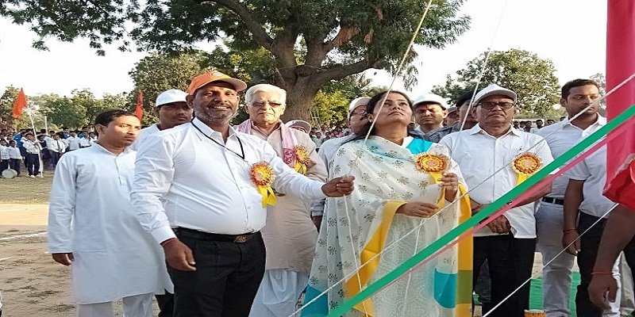
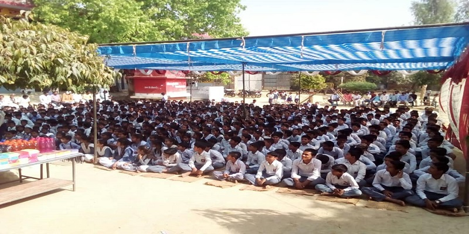
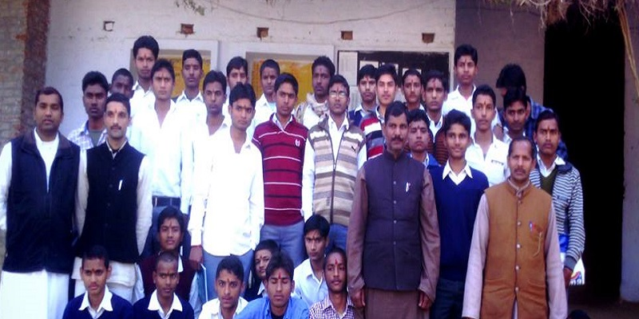
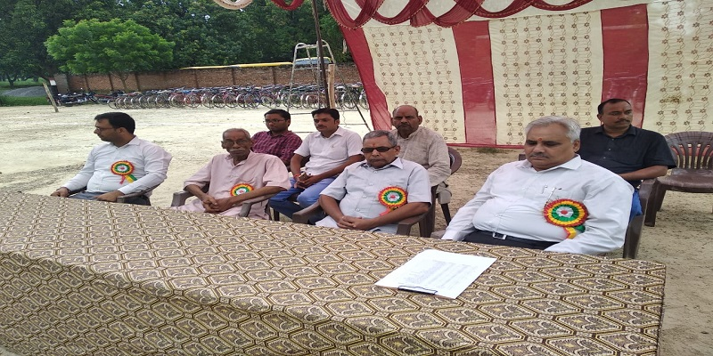
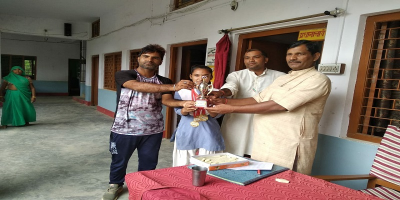
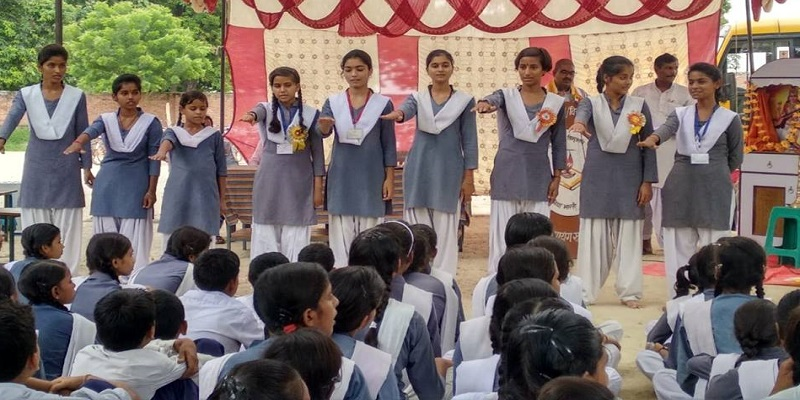
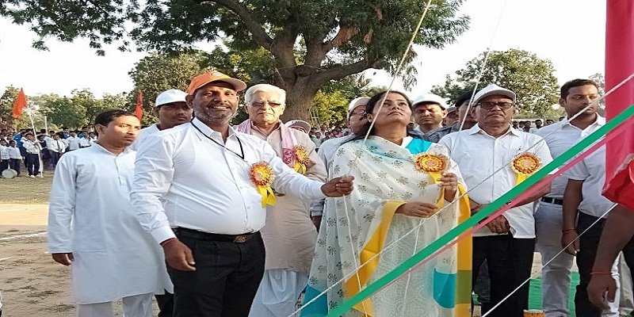
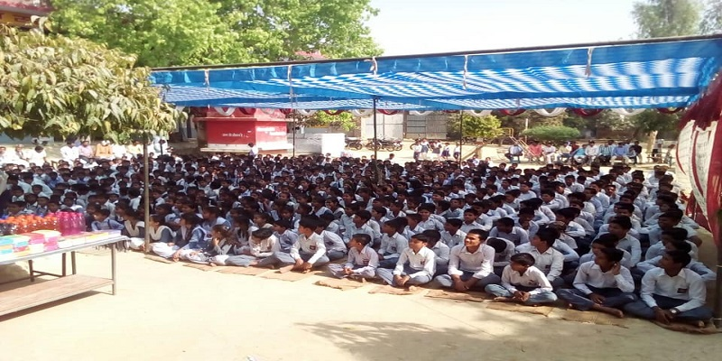
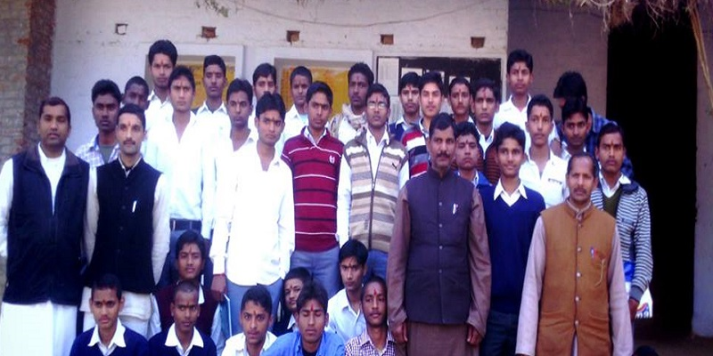
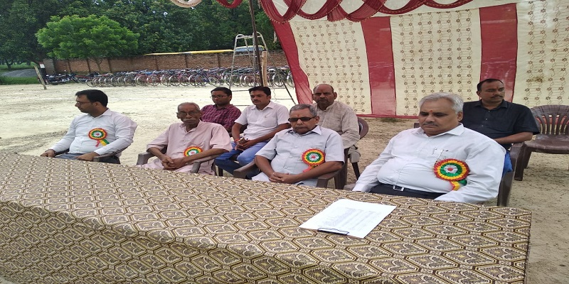
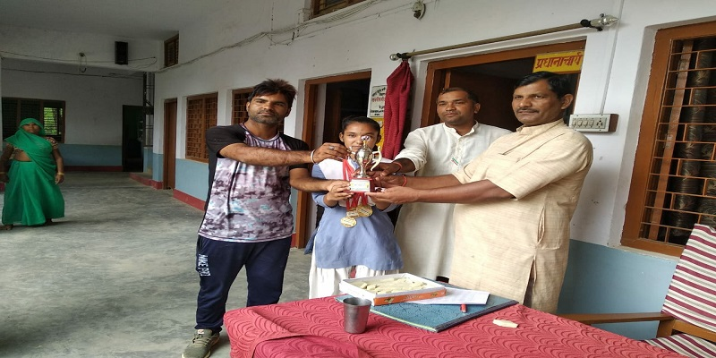
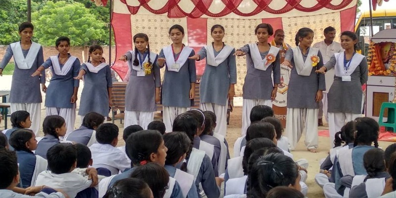